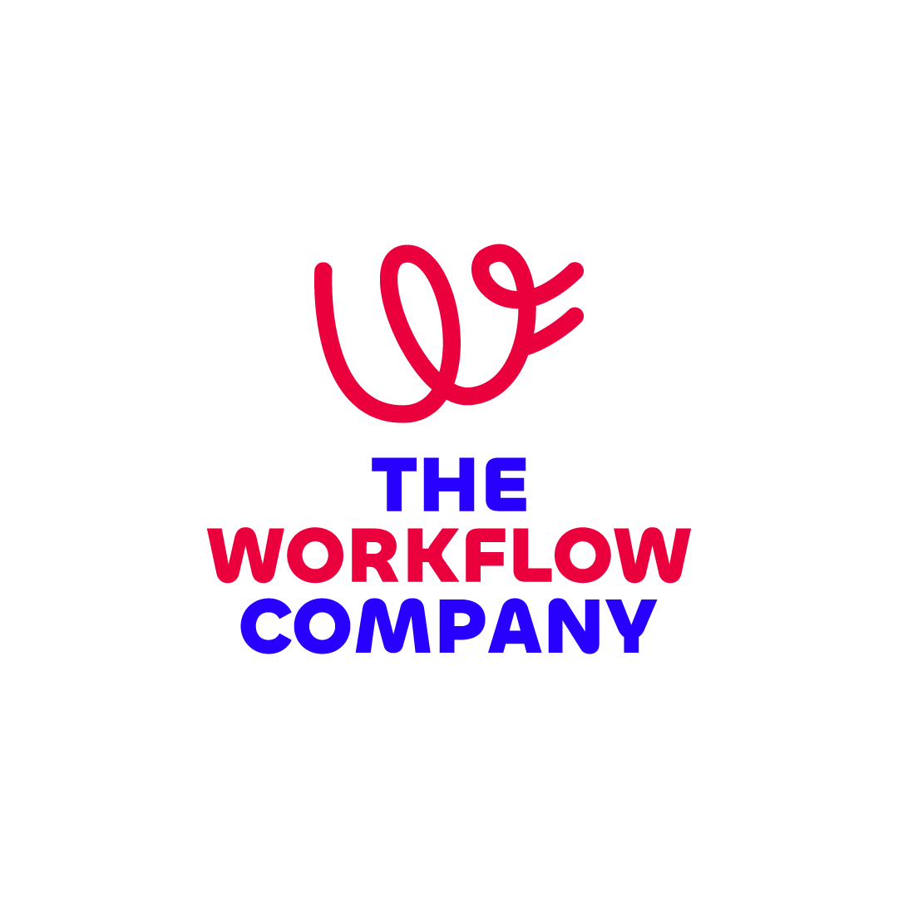

Viajero,
estabilicemos Notion y aceleremos la adopción.
Propuesta enfocada en recalibrar el sistema y destrabar adopción.
.png) The Workflow Company
The Workflow Company
Impacto
En 4 meses construimos, migramos y activamos el sistema operativo de Viajero Hostels en Notion. Hoy 5 departamentos completos trabajan desde una sola fuente de verdad, con procesos estandarizados y visibilidad real en tiempo real.

26
Subáreas organizadas
152
Licencias Business activadas
12
Sesiones de capacitación
Nuestra propuesta

Propuesta
Tras nuestra conversación, ajustamos el enfoque para priorizar impacto inmediato: estabilizar el ecosistema actual y destrabar la adopción antes de escalar a un Acompañamiento anual completo.
Etapa 1 (5–6 semanas)
Estabilización y recalibración del ecosistema
✓ Diagnóstico técnico: configuraciones, plantillas, permisos y por qué tareas no viajan a dashboards
✓ Foco Operaciones: revisar si el teamspace debe dividirse y qué frena la adopción (60–78 personas)
✓ Dashboard del CEO (Alejo): visibilidad ejecutiva y dirección asignada
✓ Resolver bloqueos técnicos que “apagan” el uso
✓ 1er Índice de Adopción (baseline) con Analytics TWC + plan de acción inicial
✓ Acompañamiento y capacitaciones para reforzar conocimientos y uso del sistema
✓ Documentación de navegación del workspace (“qué va dónde” + mapa del sistema)
✓ Plan de comunicaciones por fase + materiales gráficos para activar hábitos
Etapa 2 (Meses 4–12)
Horizonte estratégico (recomendación)
Si la Etapa 1 demuestra valor, el siguiente paso recomendado es el Acompañamiento anual completo para convertir adopción en rutina, automatizar, escalar y transferir capacidad interna.
→ Rituales semanales por área + sponsor review trimestral
→ Evolución continua del sistema operativo (flujos, gobierno, métricas)
→ Automatización e IA, cuando la base esté estable
Este enfoque permitirá
Destrabar fricciones reales (plantillas, permisos, dashboards) que frenan la adopción.
Dar visibilidad ejecutiva a Alejo (dashboard CEO) y foco en Operaciones.
Medir adopción con Analytics TWC y ejecutar un plan de acción desde la primera lectura.
Modelo

1
Inteligencia de adopción
Medición semanal, diagnóstico de uso, áreas en riesgo, programa de champions.

2
Evolución del workspace
Iteración mensual, corrección de fricciones, optimización de bases de datos.

3
Nuevas capacidades
Construcción trimestral de nuevos módulos priorizados con la sponsor.

4
Automatización e IA
Activación gradual de automatizaciones e IA alineada al ritmo real del equipo.

5
Gobernanza y autonomía
Reglas de uso, formación de champions, documentación y transferencia progresiva.
Producto
Analytics TWC
Hacemos visible lo invisible.
Nos conectamos al espacio de trabajo de Viajero, procesamos 23 tipos de eventos cada semana y devolvemos un score de adopción con plan de acción.
El framework: TWC Adoption Score
Primer vistazo
Solo el primer vistazo con datos reales de Viajero.
🎯 Alcance
49%
74 de 152 personas activas en los últimos 30 días
¿Quiénes son las 78 que no han entrado?
🔄 Consistencia
2.7 días/sem
Solo 27 de 74 activos (36%) son consistentes semana a semana
¿Es hábito o ráfaga?
💬 Colaboración
El Acompañamiento les entrega esta lectura cada lunes, con análisis y plan de acción.
Acción
| Lo que vemos hoy | Lo que haríamos en la Etapa 1 |
|---|---|
| 49% de adopción 78 personas inactivas |
Sesión 1:1 con cada líder de área. Plan de reactivación focalizado en los primeros 30 días. |
| 2.7 días activos/semana Solo 27 consistentes |
Rituales semanales en Notion: standups, weekly review, cierre mensual. Blindar a los 47 frágiles. |
| Bases de datos sin diagnóstico |
Mapeo completo en la primera semana. Decisión: simplificar, re-entrenar o eliminar. |
| 51% de licencias sin retorno medible |
Reporte mensual a Diana con usuarios reactivados, licencias en riesgo, recomendación de reasignación. |
Operación
Semanal
Reporte automático del Índice de Adopción TWC (cada lunes)
2 horas de office hours abiertas para Viajero
Mensual
Reunión de 60 min con Diana + plan de acción
Sesión de 60 min con Champions internos
Reporte ejecutivo con hallazgos y recomendaciones
Trimestral
Sponsor review estratégico de 90 min
2 nuevos flujos/módulos
1 integración o automatización
2 capacitaciones focalizadas (90 min c/u)
KPIs
Al cierre de la Etapa 1 (5–6 semanas), Viajero habrá movido sus indicadores a:
| Indicador | Hoy | Meta (Etapa 1) | |
|---|---|---|---|
| Adopción mensual | 49% | → | ≥60% |
| Adopción profunda | 18% | → | ≥60% |
| Días activos/semana | 2.7 | → | ≥3.5 |
| Licencias sin retorno | 78 | → | ≤25 |
| Champions formados | 2 | → | ≥4 |
Estas metas son el criterio para decidir continuidad hacia la Etapa 2.
Resumen ejecutivo
Hoy
78
de 152 licencias inactivas
18%
con uso consistente
Sin owner
cada cambio frena al equipo
La propuesta
Acompañamiento anual con 5 pilares: inteligencia de adopción, evolución del workspace, nuevas capacidades, automatización & IA, y gobierno interno.
The Workflow Company
Inversión
Acompañamiento anual completo (Meses 4–12)
$23,460 USD/año
Se decide después de la Etapa 1, con resultados en mano.
El comité decide primero la Etapa 1. La Etapa 2 queda como recomendación estratégica si el ecosistema ya está estable.
+35
Equipos transformados en +5 países de LATAM
+750
Miembros en la Comunidad Notion Colombia
6
Certificaciones oficiales de Notion
Sebastián Martínez
Co-founder & Strategy
Roxana Rodríguez
Co-founder & Operations
Startups · Agencias · PYMES y mid-market · ONGs y Fundaciones
Cierre
Validación de la propuesta con Diana y equipo Viajero
Alineación final sobre alcance y modalidad de pago.
Aprobación de la Etapa 1 (fase prioritaria)
5–6 semanas para estabilizar, documentar, acompañar con capacitaciones y medir adopción.
Kick-off — primera semana
Analytics TWC · Primer Índice · Mapeo de BDs · Sesiones 1:1 con líderes.
Primer Sponsor Review — cierre del Q1
Revisión de OKRs al cierre del mes 3.